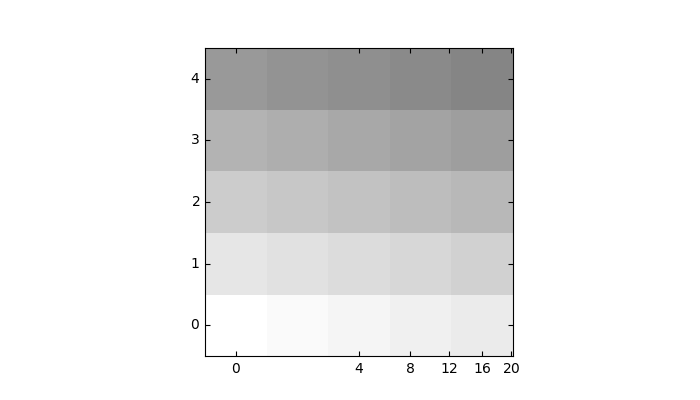

Version 3.1.0
Note
Click here to download the full example code
Custom grid and ticklines.
This example demonstrates how to use GridHelperCurveLinear to define custom grids and ticklines by applying a transformation on the grid. As showcase on the plot, a 5x5 matrix is displayed on the axes.
import numpy as np
import matplotlib.pyplot as plt
from mpl_toolkits.axisartist.grid_helper_curvelinear import \
GridHelperCurveLinear
from mpl_toolkits.axisartist.grid_finder import MaxNLocator
from mpl_toolkits.axisartist.axislines import Subplot
import mpl_toolkits.axisartist.angle_helper as angle_helper
def curvelinear_test1(fig):
"""
grid for custom transform.
"""
def tr(x, y):
sgn = np.sign(x)
x, y = np.abs(np.asarray(x)), np.asarray(y)
return sgn*x**.5, y
def inv_tr(x, y):
sgn = np.sign(x)
x, y = np.asarray(x), np.asarray(y)
return sgn*x**2, y
extreme_finder = angle_helper.ExtremeFinderCycle(20, 20,
lon_cycle=None,
lat_cycle=None,
# (0, np.inf),
lon_minmax=None,
lat_minmax=None,
)
grid_helper = GridHelperCurveLinear((tr, inv_tr),
extreme_finder=extreme_finder,
# better tick density
grid_locator1=MaxNLocator(nbins=6),
grid_locator2=MaxNLocator(nbins=6))
ax1 = Subplot(fig, 111, grid_helper=grid_helper)
# ax1 will have a ticks and gridlines defined by the given
# transform (+ transData of the Axes). Note that the transform of
# the Axes itself (i.e., transData) is not affected by the given
# transform.
fig.add_subplot(ax1)
ax1.imshow(np.arange(25).reshape(5, 5),
vmax=50, cmap=plt.cm.gray_r,
interpolation="nearest",
origin="lower")
if __name__ == "__main__":
fig = plt.figure(figsize=(7, 4))
curvelinear_test1(fig)
plt.show()
Keywords: matplotlib code example, codex, python plot, pyplot Gallery generated by Sphinx-Gallery